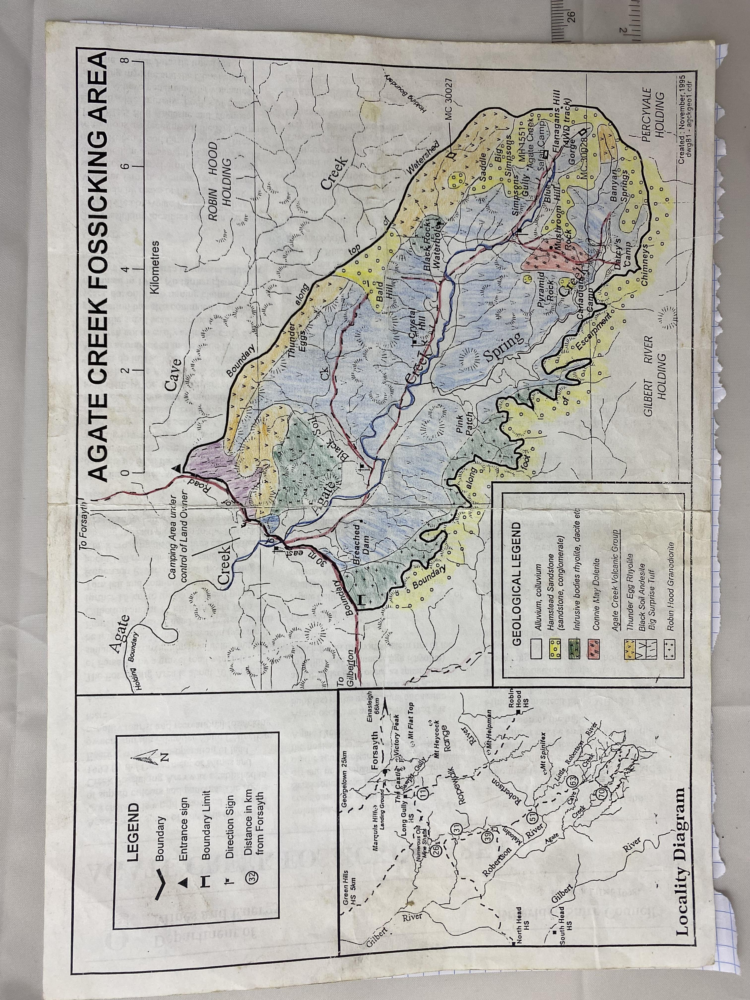

AGATE CREEK FOSSICKING AREA
Department of Mines and Energy • Etheridge Shire Council • Revision 1 (Dec 1998)

Agate Creek south of Forsayth in north Queensland is world renowned for agates of superb colours and patterns. The Agate Creek Fossicking Area was established in 1995 by the Department of Mines and Energy, with the co-operation of land owners and the Etheridge Shire Council, to simplify tourist and recreational fossicking there.
Access
The Fossicking Area is about 70 km south of Forsayth by a gravel road which is suitable for conventional vehicles, but may be impassable in the wet season (see map). From the township head southwest towards Gilberton and at 11 km turn right for a further 15 km to the North Head turnoff. Turn left and continue south to the Robertson River; note that the crossing is about 100 m wide in soft sand. The Cave Creek crossing also requires care. After passing the entrance sign to the Fossicking Area turn left after crossing Agate Creek.
History
Very little interest was shown in the deposits up until the early 1940s when limited attempts were made to use the agate in instrument bearings and chalcedony in valve seatings. Considerable interest from amateur collectors developed in the early 1960s and continued through to the late 1970s, when activity slowed somewhat. The Agate Creek Safari Camp was set up in 1980 but is now closed. Visitors continue to make good finds, although not as easily as in the early days. Sporadic small scale commercial production has also continued over the years, but only two mining claims remained in 1995. No further claims will be granted as the area is now set aside for tourists.
Geology
The fossicking localities occur in the basin-shaped area of Agate Pocket, which is underlain by rocks of the Agate Creek Volcanic Group, a remnant of a volcanic sequence of early Permian age. This was deposited on a basement of granitic rocks of the Robin Hood Granodiorite. Three formations are recognised: the Big Surprise Tuff, Black Soil Andesite and Thunder Egg Rhyolite. Intrusive bodies of much the same age have penetrated the volcanics, including rhyolite and the Connie May Dolerite. In later Jurassic times the volcanics were covered by sandstones and conglomerates of the Hampstead Sandstone; these have since been stripped off and now remain only as hill cappings on the southwestern escarpment bordering the pocket and at the head of Spring and Agate Creeks.
Agate occurs as amygdales (filled gas bubbles) in the upper parts of basaltic andesite lava flows (Black Soil Andesite) and thunder eggs occur as spherulites in rhyolitic lava (Thunder Egg Rhyolite) which forms the northeastern rim of the pocket.
Fossicking
Agate (silicon dioxide SiO2) is a variety of chalcedony which is cryptocrystalline quartz. Agates occur as nodules (solid agate), or as geodes (an outer casing of agate with a central cavity lined or filled with clear crystalline quartz, amethyst, smoky quartz or calcite), roughly ellipsoidal or rounded in shape in various sizes but averaging about 50mm. The agate is often multi-coloured and usually banded which can be in straight, curved or irregular patterns. The thunder eggs in the rhyolite may contain infillings of red brown jasper.
Black Soil Creek, Crystal Hill, Bald Hill, Simpsons, Blue Hills and Flanagans are the main areas of interest (see map). Agates can be separated from the decomposed lavas by hand digging. Because the agate is hard and resists weathering, searching down slope colluvial deposits may also be productive as agates are released and transported from the host lavas. The alluvium of black soil and gravel of present day drainages is also worth attention especially after the wet season. The creeks in the area are usually dry but water may be found in Black Rock Waterhole and Banyan Spring.
Requirements
Fossicking for gemstones requires a Fossickers Licence which can be issued for varying periods upon payment of the relevant fee to the Mining Registrar, Georgetown or from the Goldfields Tavern, Forsayth. Fossickers Licences may also be obtained from the Cobbold Camping Village. Licence holders do not need further permission from the land holder to enter the Fossicking Area to fossick. Hand tools only are permitted.
Two mining claims (MC 30027 and MC 30028) within the area are excluded from the declared Fossicking Area (see map); these must not be entered without the permission of the holders. Miners Homestead Lease MH 1551 is also excluded from the Fossicking Area.
To fossick outside the declared Fossicking Area the licence holder is required to obtain the written permission of the land holder.
Camping
Camping is not permitted in the Fossicking Area but the land holder (Mr David Terry) allows camping nearby, adjacent to Agate Creek outside the Fossicking Area. Camping is also catered for at the Cobbold Camping Village about 30 km before the Fossicking Area. Visitors should contact Mr Simon Terry (07) 4062 5446.
Camping is not permitted elsewhere on Robin Hood or adjoining properties.
Code of Conduct
To protect the area for the future, please:
• Make safe any excavation on leaving.
• Remove all rubbish and dispose of properly.
• To avoid erosion, keep vehicles to established tracks.
• Do not interfere with the vegetation, stock or wildlife.
• Control pets so they do not annoy others, stock or wildlife.
• Avoid lighting fires in dry conditions and keep a 2m diameter cleared space around fireplaces.
For further information
The Mining Registrar
Court House, Georgetown Qld 4871
Phone (07) 4062 1204
Etheridge Shire Council
P O Box 12, Georgetown Qld 4871
Phone (07) 4062 1233